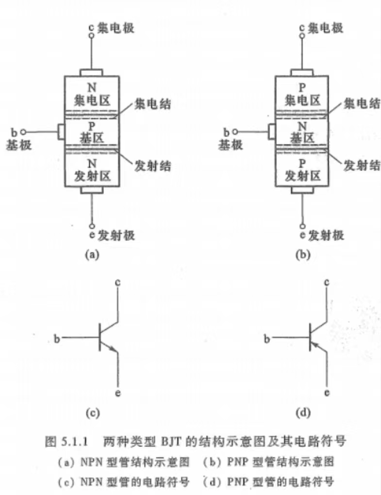
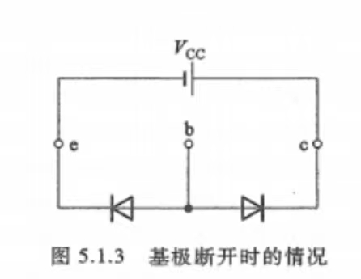
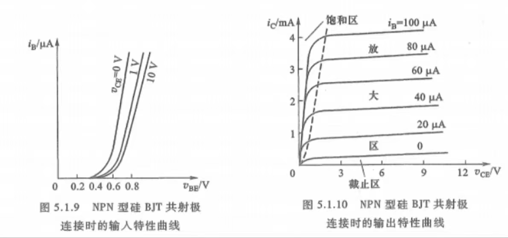

分析：
\(R_b\)是一个限流电阻，防止电流过大使BJT损坏
基本共射极放大电路中，交流量、直流量共存。分析时，先确定直流量，后分析交流性能。

发射极的箭头表示发射结外加正偏电压时，发射极电流的实际方向
工作状态：BJT内部含有两个背靠背的PN结。当这两个PN结的偏置条件（正偏或反偏）不同时，BJT将呈现不同的特性，共有四种可能的偏置组合：
BJT内部载流子的传输过程
基极无任何连接时：

集电极和发射之间相当于两个背靠背的PN结二极管。此时无论c、e间接什么极性的电压，总有一个PN结是反偏的。c、e间都不能导通。
仅有集电结反偏电压时：集电结少子漂移运动加强，产生漂移电流（集电结反向饱和电流）ICBO
发射结再加正偏电压时：发射结多子扩散运动加强，高掺杂浓度的发射区向基区注入自由电子（同时极少部分空穴从基区流入发射结），形成发射极电流IE。注入基区的自由电子又在集电结电场力作用下漂移到集电区，形成电流ICN，ICN与ICBO共同构成集电极电流IC，即\(I_C=I_{CN}+I_{CBO}<\frac{V_{CC}}{R_C}\)
发射区注入基区的自由电子，除了被集电区收集外，还有一部分与基区的多子空穴复合，形成基区复合电流\(I_{BN}\)，其与\(I_{CBO}\)一起形成基极电流\(I_B = I_{BN} - I_{CBO}\)
发射极电流对集电极电流的控制作用：由于集电极掺杂浓度很低，所以漂移电流ICBO很小，而ICN取决于IE的大小
BJT三个电极的电流关系：\(I_E=I_B+I_C\)
BJT放大状态下的控制关系
（1）IE对IC的控制：电流放大系数\(\bar \alpha \rightarrow 1^- \) $$ \begin{align} \bar \alpha &= \frac{I_{CN}}{I_E} = \frac{I_C-I_{CBO}}{I_E}\\ I_C &= \bar \alpha I_E + I_{CBO} \end{align} $$ 由于\(I_C \gg I_{CBO}\)： $$ I_C \approx \bar \alpha I_E $$
（2）IB对IC的控制：电流放大系数\(\bar \beta\) $$ \begin{align} \bar \beta &= \frac{I_{CN}}{I_{BN}} = \frac{I_C-I_{CBO}}{I_B+I_{CBO}}\\ I_C &= \bar \beta I_B +(1+\bar \beta)I_{CBO} \end{align} $$
BJT的三种组态：
三、BJT的I-V特性曲线
共射极连接时的I-V特性曲线：
（1）输入特性：\(i_B = f(v_{BE})|_{v_{CE} = 常数}\)
特点：
（2）输出特性：\(i_c=f(v_{CE})|_{i_B=常数}\)
结构：
分析：
\(R_b\)是一个限流电阻，防止电流过大使BJT损坏
基本共射极放大电路中，交流量、直流量共存。分析时，先确定直流量，后分析交流性能。
直流量分析：令\(v_s=0\)，通过直流通路求得电路的静态工作点\(Q\)（\(I_{BQ}、I_{CQ}、V_{CEQ}、V_{BEQ}\)）
规定硅管的\(V_{BEQ}=0.7\)V，锗管\(V_{BEQ}=0.2\)V
交流性能分析：\(v_s\neq0\)时，BJT各极电流电压都在Q点的基础上随输入信号作相应变化。
（一）H参数小信号模型（混合参数模型）
由BJT的输入、输出曲线写出如下两个方程： $$\begin{cases}\begin{align} v_{BE} &= f_1(i_B,v_{CE})\\ i_C &= f_2(i_B,v_{CE}) \end{align}\end{cases}$$ 小信号模型指BJT在交流低频小信号工作状态下的模型，这时考虑的是电压、电流间的微变关系。为此，对上两式取全微分： $$\begin{cases}\begin{align} dv_{BE} &= \frac{\partial v_{BE}}{\partial i_B}|_{V_{CEQ}}di_B+\frac{\partial v_{BE}}{\partial v_{CE}}|_{I_{BQ}}dv_{CE}\\ di_C &= \frac{\partial i_C}{\partial i_B}|_{V_{CEQ}}di_B+\frac{\partial i_C}{\partial v_{CE}}|_{I_{BQ}}dv_{CE} \end{align}\end{cases}$$ $$\begin{cases}\begin{align} v_{BE} &= h_{ie}i_b + h_{re}v_{ce}\\ i_C &= h_{fe}i_b + h_{oe}v_{ce} \end{align}\end{cases}$$ 式中，\(h_{ie}\)、\(h_{re}\)、\(h_{fe}\)、\(h_{oe}\)即为H参数。
\(h_{ie}=\frac{\partial v_{BE}}{\partial i_B}|_{V_{CEQ}}=r_{be}(\Omega)\)：BJT输出端交流短路（即\(v_{ce}=0,v_{CE}=V_{CEQ}\)）时的输入电阻，即小信号作用下b-e极间的交流电阻
\(h_{re}=\frac{\partial v_{BE}}{\partial v_{CE}}|_{I_{BQ}}\)（无量纲）：BJT输入端交流开路（即\(i_b=0,i_B=I_{BQ}\)）时的反向电压传输比。反映了BJT输出回路电压\(v_{CE}\)对输入回路电压\(v_{BE}\)的影响程度
\(h_{fe}=\frac{\partial i_C}{\partial i_B}|_{V_{CEQ}}\)（无量纲）：BJT输出端交流短路时的正向电压传输比，或电流放大倍数，即β
\(h_{oe}=\frac{\partial i_C}{\partial v_{CE}}|_{I_{BQ}}=\frac{1}{r_{ce}}(S)\)：BJT输入端交流开路时的输出电导。是放大区输出特性曲线的斜率，反映了电压\(v_{CE}\)对电流\(i_C\)的影响程度。
由于四个H参数的量纲各不相同，故称为混合参数
（二）小信号模型的简化